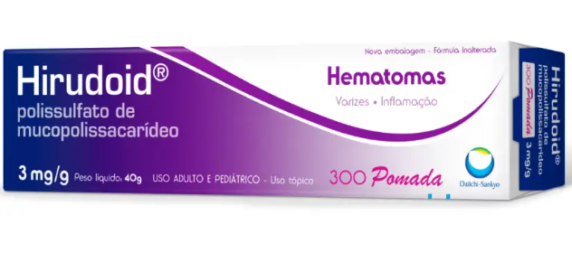

Hirudoid 300mg Pomada com 40g
Hirudoid
Vendido e entregue porDrogasil
- Indicado para processos inflamatórios localizados.
- Auxilia no tratamento de varizes e furúnculos.
- Uso tópico para hematomas e flebites.
- Aplicação suave, 3 a 4 vezes ao dia.
- Eficaz para inflamações em vasos linfáticos.
R$ 45,66
Compre aqui!
Descrição
O que é e para que serve o Hirudoid 300Mg Pomada Com 40G?
O Hirudoid é um gel medicamentoso dermatológico de uso externo indicado para tratar processos inflamatórios localizados. Serve para auxiliar no tratamento de manchas roxas (hematomas) após traumas ou cirurgias, inflamação em veias superficiais, varizes, inflamação de vasos linfáticos, furúnculos e mastite, ajudando a reduzir inchaço, dor e desconforto em diferentes condições inflamatórias.
Benefícios
-
Tratamento eficaz para processos inflamatórios localizados.
-
Auxilia na redução de hematomas após traumas ou cirurgias.
-
Ajuda no tratamento de inflamações em veias superficiais.
-
Alivia sintomas de varizes, linfangites e furúnculos.
-
Pode ser usado em casos de mastite.
-
Aplicação simples e rápida na área afetada.
-
Melhora dos sintomas esperada após 14 dias de tratamento contínuo.
-
Aplicar uma camada de Hirudoid Gel sobre a região afetada.
-
Espalhar suavemente a camada de gel.
-
Repetir a aplicação três a quatro vezes ao dia ou conforme necessidade e indicação médica.
-
Não use o Hirudoid se for alérgico ou sensível a qualquer componente da fórmula.
-
Em caso de persistência dos sintomas, consulte um médico.
-
O uso do medicamento pode trazer riscos, portanto, consulte sempre o médico e o farmacêutico.
-
Siga corretamente o modo de uso indicado.
-
Não ultrapasse o período de tratamento recomendado (geralmente 10 dias para lesões e 1-2 semanas para inflamação de veias).